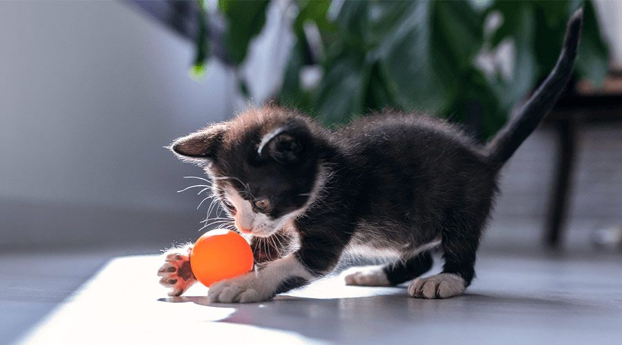

Lucía Megido García
El nombre de esta persona es Lucía Megido García.
Nació en Cangas del Narcea en fecha de 1999-12-04.
Las coordenadas del lugar de nacimiento son longitud: -6.54913, latitud: 43.1771, altitud: 396.
Reside en Levinco con coordenadas longitud: -5.60097, latitud: 43.15158, altitud: 470.
Comentarios: Le gusta el ColaCao.
Jesús Ortega González
El nombre de esta persona es Jesús Ortega González.
Nació en Levinco en fecha de 1998-11-09.
Las coordenadas del lugar de nacimiento son longitud: -5.60097, latitud: 43.15158, altitud: 470.
Reside en Levinco con coordenadas longitud: -5.60097, latitud: 43.15158, altitud: 470.
Comentarios: Le gusta XML.
José García Fernández
El nombre de esta persona es José García Fernández.
Nació en Levinco en fecha de 1999-10-05.
Las coordenadas del lugar de nacimiento son longitud: -5.60097, latitud: 43.15158, altitud: 470.
Reside en Felechosa con coordenadas longitud: -5.507697, latitud: 43.10332, altitud: 654.
Comentarios: Le gusta la fiesta.
Jesús García Fernández
El nombre de esta persona es Jesús García Fernández.
Nació en Levinco en fecha de 2002-07-07.
Las coordenadas del lugar de nacimiento son longitud: -5.60097, latitud: 43.15158, altitud: 470.
Reside en Felechosa con coordenadas longitud: -5.507697, latitud: 43.10332, altitud: 654.
Comentarios: El hermano de José.
Lorena Fernández Fernández
El nombre de esta persona es Lorena Fernández Fernández.
Nació en Felechosa en fecha de 1999-12-04.
Las coordenadas del lugar de nacimiento son longitud: -5.507697, latitud: 43.10332, altitud: 654.
Reside en Felechosa con coordenadas longitud: -5.507697, latitud: 43.10332, altitud: 654.
Comentarios: Comparte cumpleaños con Lucía.
Gema González Rodríguez
El nombre de esta persona es Gema González Rodríguez.
Nació en Llanos en fecha de 1997-01-01.
Las coordenadas del lugar de nacimiento son longitud: -5.58333, latitud: 43.10000, altitud: 530.
Reside en Llanos con coordenadas longitud: -5.58333, latitud: 43.10000, altitud: 530.
Comentarios: No le gusta la Navidad.
Santiago González de la Fuente
El nombre de esta persona es Santiago González de la Fuente.
Nació en Llanos en fecha de 1998-03-30.
Las coordenadas del lugar de nacimiento son longitud: -5.58333, latitud: 43.10000, altitud: 530.
Reside en Felechosa con coordenadas longitud: -5.507697, latitud: 43.10332, altitud: 654.
Comentarios: Le gusta jugar al fútbol.
María Rodríguez Prieto
El nombre de esta persona es María Rodríguez Prieto.
Nació en La Fuente en fecha de 1999-08-06.
Las coordenadas del lugar de nacimiento son longitud: -5.55621, latitud: 43.1271, altitud: 600.
Reside en La Fuente con coordenadas longitud: -5.55621, latitud: 43.1271, altitud: 600.
Comentarios: Se quiere mudar a La Corredoria.
Gerardo Rodríguez Prieto
El nombre de esta persona es Gerardo Rodríguez Prieto.
Nació en La Fuente en fecha de 1999-08-06.
Las coordenadas del lugar de nacimiento son longitud: -5.55621, latitud: 43.1271, altitud: 600.
Reside en La Fuente con coordenadas longitud: -5.55621, latitud: 43.1271, altitud: 600.
Comentarios: Es el hermano mellizo de María.
Pablo García Blanco
El nombre de esta persona es Pablo García Blanco.
Nació en Cangas del Narcea en fecha de 1998-05-10.
Las coordenadas del lugar de nacimiento son longitud: -6.54913, latitud: 43.1771, altitud: 396.
Reside en Cangas del Narcea con coordenadas longitud: -6.54913, latitud: 43.1771, altitud: 396.
Comentarios: Le encantan los voladores.
Román García Álvarez
El nombre de esta persona es Román García Álvarez.
Nació en Piñeres en fecha de 1996-05-12.
Las coordenadas del lugar de nacimiento son longitud: -5,6966, latitud: 43.1694, altitud: 383.
Reside en Cangas del Narcea con coordenadas longitud: -6.54913, latitud: 43.1771, altitud: 396.
Comentarios: No recuerda nada de la mudanza.
Francisco González Suárez
El nombre de esta persona es Francisco González Suárez.
Nació en Cangas del Narcea en fecha de 1999-07-10.
Las coordenadas del lugar de nacimiento son longitud: -6.54913, latitud: 43.1771, altitud: 396.
Reside en Cangas del Narcea con coordenadas longitud: -6.54913, latitud: 43.1771, altitud: 396.
Comentarios: Tiene un perro y dos gatos.
Estela Rodríguez Herrero
El nombre de esta persona es Estela Rodríguez Herrero.
Nació en Cangas del Narcea en fecha de 2001-09-07.
Las coordenadas del lugar de nacimiento son longitud: -6.54913, latitud: 43.1771, altitud: 396.
Reside en Cangas del Narcea con coordenadas longitud: -6.54913, latitud: 43.1771, altitud: 396.
Comentarios: Fue novia de Francisco.